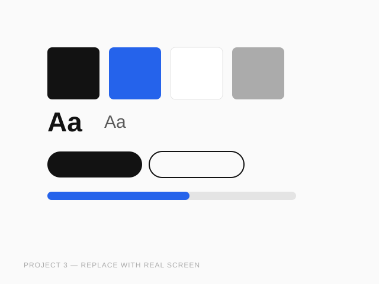
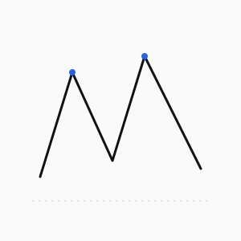
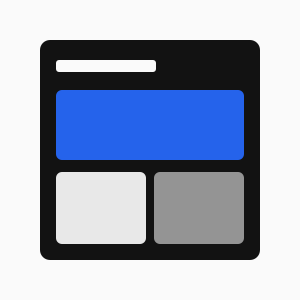

← Back to work
[Project 3 name]
[One sentence: what the project was and the problem it solved.]
- Role
- [Your role, e.g. Solo UX designer]
- Tools
- [Figma, ...]
- Team
- [Solo / 3-person team / ...]

The problem
[Name the actual problem — not just "I was asked to redesign X." What wasn't working, for whom?]
Key decisions
[1-2 specific choices you made and why — written as "I", not "we." Specific beats generic process talk.]
The outcome
[What changed as a result — a number if you have one, or specific feedback you received.]
Process


What I'd do differently
[One honest sentence — reviewers read a quick reflection as a sign of real thinking, not a weakness.]
Like what you see?
← Back to all work